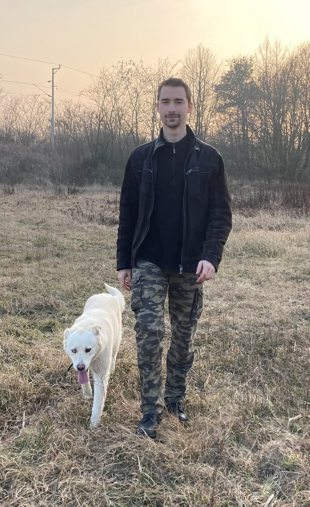

Bemutatkozás
Vásárhelyi Balázs vagyok, a Budapesti Műszaki és Gazdaságtudományi Egyetem Gépészmérnöki karának elsőéves hallgatója. Szombathelyen születtem, középiskolai tanulmányaimat ELTE Bolyai János Gyakorló Általános Iskola és Gimnáziumban végeztem.
Lévén elsőéves mivoltom, érdemleges munkákat még nem tudok igazán felmutatni, bár nagyon szeretek CAD rendszerekkel dolgozni, amiről bővebben a munkák fül alatt található információ.
Szabadidőmben legszívesebben a természetet járom egy sátorral az oldalamon, valamint belekontárkodtam a pirográfia művészetébe is.